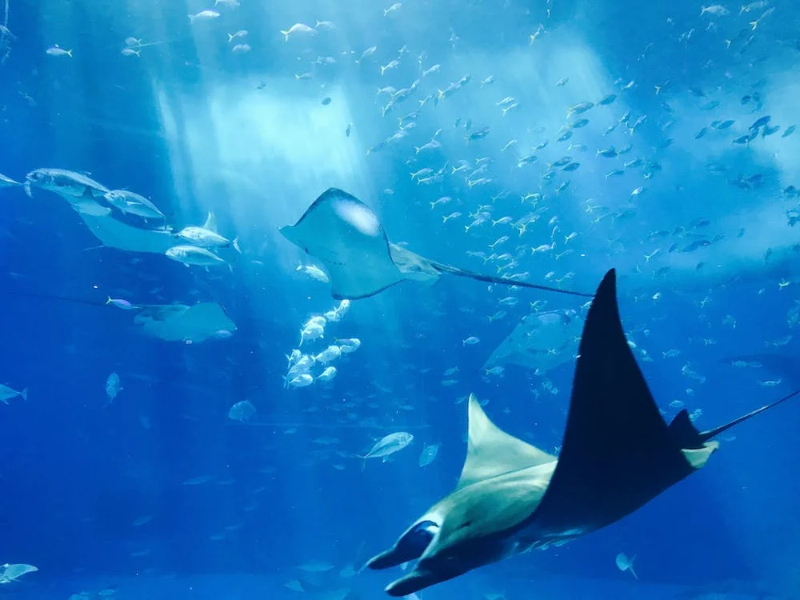
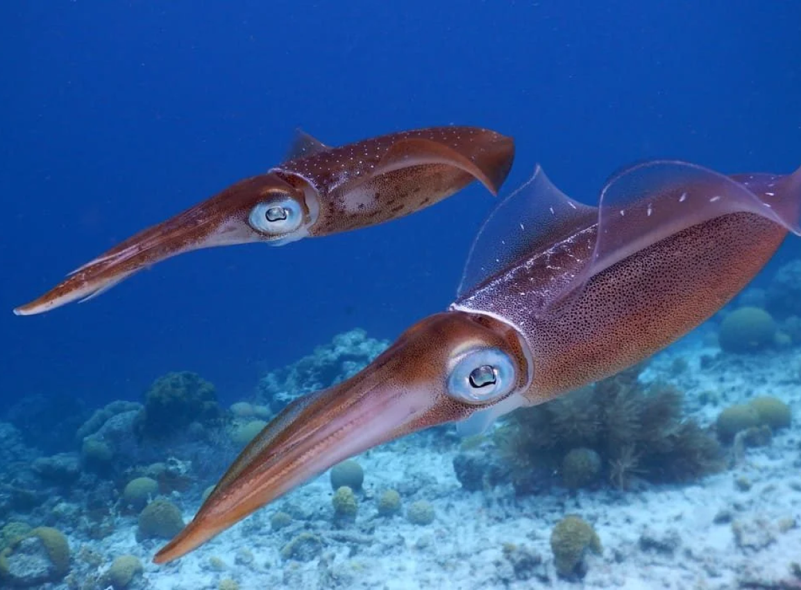
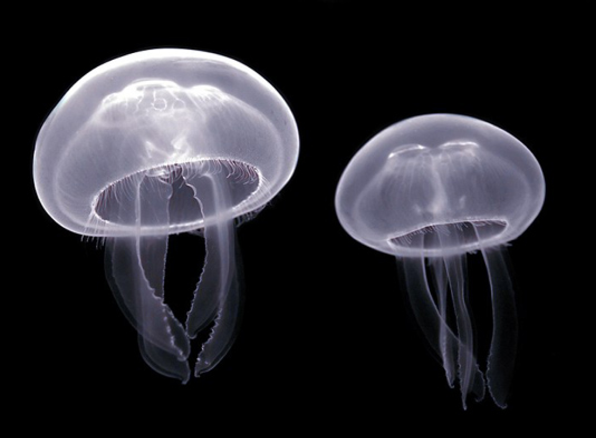
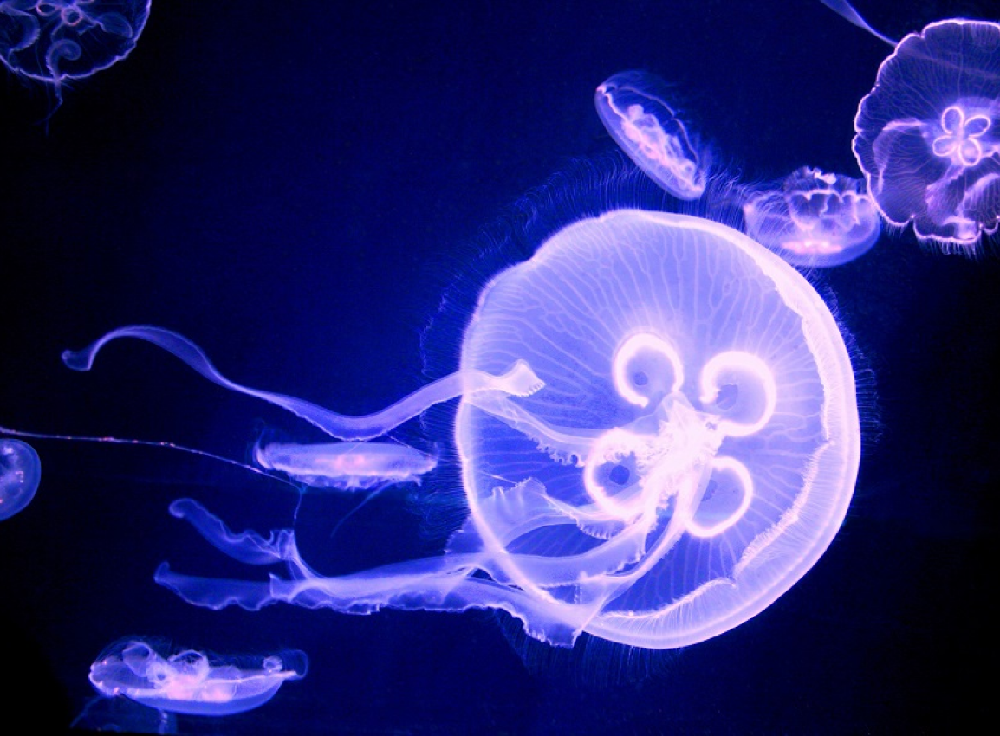
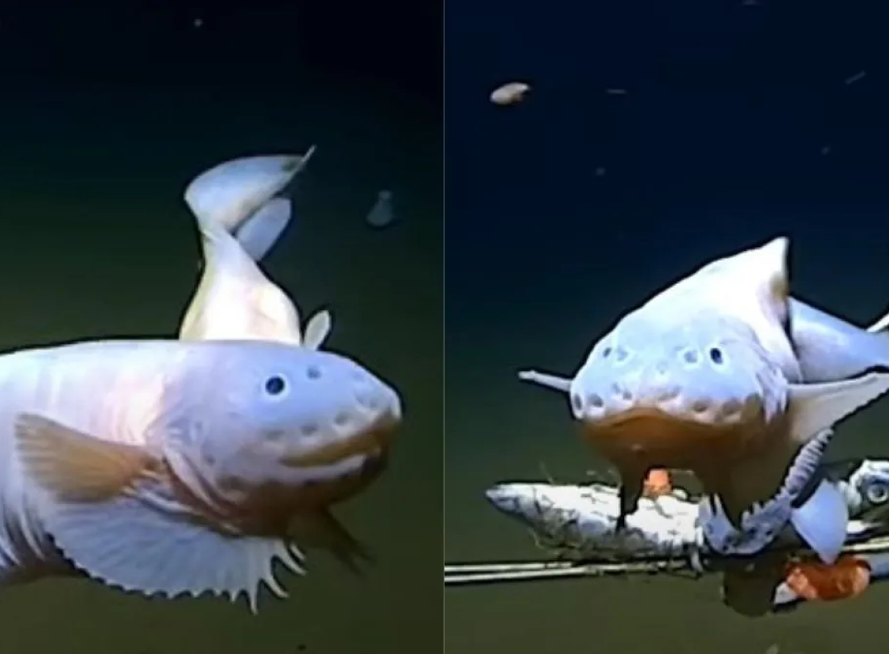

Zona Epipelágica (0-200 metros):
Animales: En esta zona, encuentras una amplia gama de vida marina, como peces, delfines, ballenas,
tortugas
marinas, calamares, medusas y muchos otros organismos que pueden moverse libremente en la capa superior
del
océano.
Humanos: Los buzos recreativos pueden sumergirse a esta profundidad.


Zona Mesopelágica (200-1,000 metros):
Animales: Algunos peces y calamares migran a esta zona, aunque en menor cantidad. La vida es escasa en
comparación con la zona superior debido a la falta de luz.
Humanos: Los buzos técnicos entrenados pueden sumergirse hasta estos niveles.
Zona Batipelágica (1,000-4,000 metros):
Animales: La vida es limitada, pero aún se pueden encontrar peces de aguas profundas, calamares gigantes,
algunos crustáceos y medusas.
Humanos: La tecnología submarina avanzada, como los sumergibles, puede explorar estas profundidades.


Zona Abisal (4,000-6,000 metros):
Animales: Los organismos que viven aquí están adaptados a la presión extrema y la falta total de luz.
Incluyen especies únicas como peces de aguas profundas, gusanos, bacterias y otros seres
bioluminiscentes.
Humanos: Solo vehículos submarinos no tripulados y dispositivos tecnológicos pueden alcanzar estas
profundidades.
Zona Hadal o Fosas Abisales (más de 6,000 metros):
Animales: Los organismos que habitan aquí son extremófilos adaptados a la presión abrumadora y a menudo
se
encuentran cerca de fuentes hidrotermales. Incluyen varias especies de gusanos, crustáceos, bacterias y
otros microorganismos.
Humanos: Los humanos no pueden sumergirse a estas profundidades debido a la extrema presión del agua.
Solo
se han explorado a través de sumergibles controlados de forma remota.

Los océanos, vastos y diversos, albergan una rica biodiversidad, desde las icónicas ballenas y peces en la
superficie hasta seres fascinantes en profundidades intermedias como calamares gigantes y peces adaptados a
la penumbra. En las fosas abisales, la vida marina alcanza su máxima singularidad, con seres extraños
adaptados a la oscuridad total y presiones extremas, como anguilas sin ojos y cangrejos, planteando
cuestiones sobre la evolución y sostenibilidad de los ecosistemas oceánicos, fascinando a científicos y
público por igual.